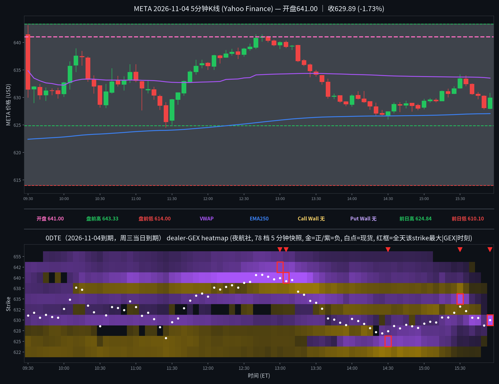

META 日内报告
2026年11月4日 · 周三 · 日内报告
早盘分析
（Junk-man 早盘简报未抓取到，留空待补）
（待补充 Junk-man 当日 #junkman-analysis 原文）
5 分钟 K 线 × 0DTE heatmap
0DTE（2026-11-04到期，周三当日到期），夜航社 78 档 5 分钟快照；白点为每档现货位置

heatmap解读（0DTE（2026-11-04到期），夜航社 78 档 5 分钟快照）
GEX 地形图（0DTE（2026-11-04到期），夜航社 78 档 5 分钟快照）：金色=正 gamma 区（做市商对冲减速带/墙），紫色=负 gamma 区（加速带）。白点为每档现货位置。注意：15:55 帧为 0DTE 到期残值帧（全帧仅 630 一个 cell），15:50 帧亦已衰减；收盘结构读数以 15:30 最后完整结构帧为准，残值不作节点。另注：美东已转 EST，heatmap 窗口按 14:30Z–21:05Z 取全（09:30–15:55 ET）。
- 金色带（15:30 最后完整结构帧）：637.5(+13.1M)/632.5(+5.9M)；现价 629.89 上方最近正节点为 632.5，下方正节点已衰减殆尽（622.5 仅 +0.1M）
- 紫色带（15:30 帧）：635(-60.8M)/630(-11.5M)/640(-5.3M)；上方 635 负簇距收盘价约 5 点，价格收盘在其下方、未进入
- 全天最大真实节点：640(-102.3M@13:05)、635(-60.8M@15:30)、625(-42.8M@14:30)、642.5(-37.4M@13:00)；630 的 -110.8M@15:55 为单 cell 到期残值，排除在真实节点外
- 结构特点：总 gamma 全天为负，开盘 -45.2M → 10:30 -28.9M → 12:00 -98.5M → 13:00 -161.9M（全天最负）→ 13:30 -77.4M → 15:30 -60.6M；价格在总 gamma 最负时段（午间）冲高至 641.41 后反转回落，负 gamma 环境下的上行未延续；收盘在 VWAP(633.50)下方、EMA250(627.04)上方
全天最大节点 TOP5
一、630（15:55 值是 0DTE 到期残值，不作节点）：全天真实量级——09:30 -8.4M → 10:00 -17.0M → 11:00 -20.2M → 12:00 -16.8M → 13:30 -14.0M → 15:00 -4.6M → 15:30 -11.5M → 15:45 -46.0M → 15:50 -10.6M（该帧仅 8 个 cell、余值近 0）→ 15:55 单 cell -110.8M；影响方式——残值帧的 -110.8M 不是盘中形成的节点，不能读成收盘压制；该 strike 全天真实量级仅 -4M 至 -20M 区间波动，午后价格在其上下（628–630 一带）磨时未形成加速，15:45 的 -46.0M 亦已进入到期衰减段，读数须打折。
二、640（上方负区，全天最大真实节点，午间反转核心）：全天变化——09:30 -8.1M → 11:00 -39.9M → 12:00 -63.4M → 12:30 -83.2M → 13:00 -100.1M → 13:05 -102.3M 峰值 → 13:30 -38.1M → 14:00 -24.4M → 15:00 -7.8M；影响时段——上午价格上行途中负值一路加深，午间价格推入该区（12:40/12:45 见 641.41）后反转；影响方式——上方负簇的天花板：价格 12:45 摸 641.41 后未能站上 642.5，13:15 起连跌（13:15 收 636.64 → 13:30 收 634.19 → 午后 628 一带），负值随价格离开同步崩塌至个位数，是当日午间冲高回落的主结构背景。
三、635（上方负区，尾盘突深、未兑现）：全天变化——09:30 -9.8M → 10:00 -10.9M → 11:00 -11.3M → 12:00 -16.4M → 13:00 -17.2M → 13:30 -29.5M → 14:00 -19.3M → 15:00 -13.6M → 15:30 -60.8M 峰值 → 15:50 约 0M（到期衰减）；影响时段——15:30 前后价格在 632–633 一带、位于其下方约 2–3 点；影响方式——未触及的近处负簇：峰值时现货约 633，价格此后未上探 635、反而收于 629.89，负值突深未兑现为上行加速或下行挤压，且 15:30 已近到期段，读数须打折。
四、625（正转负的下方带，午后价格守在其上）：全天变化——09:30 +4.7M → 10:00 +3.7M → 11:00 +4.8M → 12:00 +2.9M → 13:00 +1.8M → 13:30 -3.7M（翻负）→ 14:00 -23.4M → 14:30 -42.8M 峰值 → 15:00 -22.6M → 15:30 -0.3M；影响时段——13:30–14:30 价格自 634 一带滑向 628 一带；影响方式——下方加速带未被跌入：翻负后价格午后最低约 626.5，始终未跌破 625，负值在价格于 628–630 企稳后衰减至近 0；上午它还是正节点时，日低 624.50（11:25）曾短暂跌破它，随后迅速收回——该位置日内两度被测试均未形成持续跌破。
五、642.5（上方负区，午间天花板）：全天变化——09:30 -9.8M → 10:00 -9.9M → 11:00 -6.9M → 12:00 -9.1M → 12:30 -23.9M → 13:00 -37.4M 峰值 → 13:30 -14.8M → 15:00 -3.0M；影响时段——首根 09:30 冲高 643.09 与午间 12:40–12:45 的 641.41 两次逼近；影响方式——两次均未站上：首根收 631.47 直接回落，日内最高 643.09 只是上影线触及；午间第二次逼近后同样反转，640/642.5 负簇连成 640–642.5 上方压制带，价格午后未再回到 640 上方。
亮度口径：p99 截断做上限；红框 = 全天该 strike 最大 |GEX| 时刻；TOP5 排名以全天最大 |GEX| 为准（build_meta_day.py 输出一致），但 630 的 15:55 峰值为到期残值帧、分析中已单独说明、不作节点读数。
资金流（0DTE到期2026-11-04，0笔；premium≥$20万｜size≥50｜DTE≤1｜side=at_ask/at_bid；mid单列、绝不计入主动买卖）
（当日无符合筛子的 flow 记录，或数据未拉取到）
本日口径内 0 笔：YHS /v1/flow/trades 在 premium≥$20万＋size≥50＋kind=order 过滤下返回 47 笔，本地 DTE≤1 过滤后全部剔除——这 47 笔的 min_dte 均 ≥2（最近为 2026-11-06 到期），无一笔为当日到期。诊断说明（不计入统计）：把门槛放宽到 premium≥$5万＋size≥10 时，当日 0DTE 成交有 51 笔，但最大单笔 premium 仅 $174.8k（7800P，12 张），未达到 $20万口径线；0DTE 大单在本日口径下真实缺席，无偏多/偏空笔数与金额可报、无 30 分钟簇。
分析总结
价格行为 × 0DTE GEX 结构复盘
① 开盘 641.00（官方；5m 首根开 641.40），较昨收 620.95 跳空 +3.23%（事件日：ADP 超预期＋财政部再融资＋10:00 ISM服务业＋选举反应＋AMD gap）；全天 624.50–643.09，收 629.89（+1.44% vs 昨收；收开差 -11.11）。
② 白点轨迹：首根 09:30 宽幅 629.98–643.09（收 631.47，跳空当日即回落）→ 10:10 摸 638.86 → 11:25 见全天低 624.50（恰在前日高 624.84 下方止跌收回）→ 午间爬升、12:40/12:45 见 641.41 → 13:15 起反转（13:15 收 636.64 → 13:30 收 634.19）→ 午后 628–630 窄磨 → 终根 15:55 收 629.89（收在前日高 624.84、EMA250 627.04 之上，VWAP 633.50 之下）。
③ 结构：总 gamma 全天为负，午间加深至 -161.9M（13:00），640 负节点峰值 -102.3M（13:05）与 642.5 负簇连成上方压制带，价格两次逼近（首根 643.09、午间 641.41）均未站上、随后回落约 12 点；625 由正转负（13:30 起）后价格守在其上（午后最低约 626.5）；收盘结构以 15:30 帧为准（总 gamma -60.6M 仍为负），15:55 单 cell 残值不作读数。事件日口径：只看方向，精确点位不可信。
④ Junk-man 简报已核实缺席（见 junkman 字段）：当日分隔线下仅有一条 07:19 MDT 综合批次消息，无独立 META 简报，墙位记 null；收盘算法关键位见明日预测（算法值，非简报墙）。
⑤ 资金流：本日口径内 0 笔（见资金流 verdict）——当日到期大单真实缺席，方向读数无大单佐证。
K线=Yahoo Finance 5分钟；heatmap=夜航社 dealer-GEX 5分钟快照；heatmap亮度=平方根连续渐变（p99裁剪）。
收盘后的静态快照；页面不在打开时更新行情。